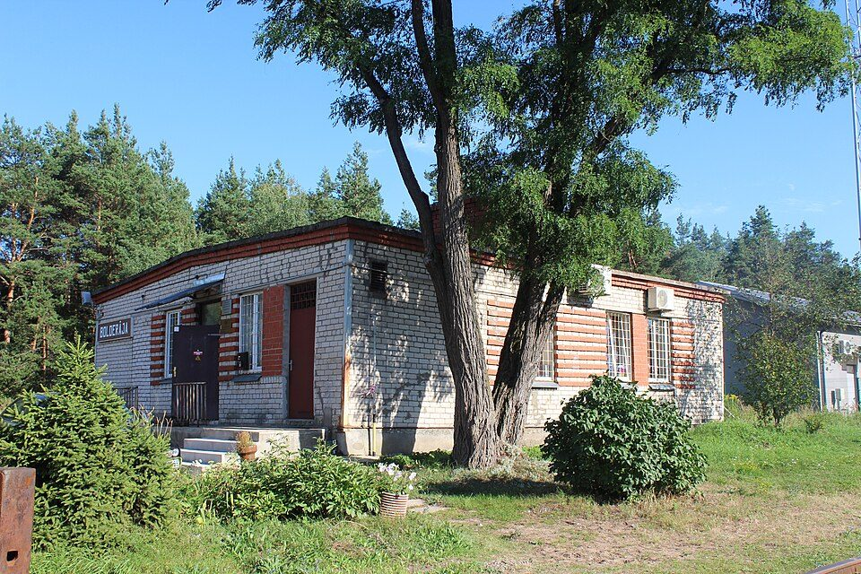

The Workshop for the Restoration of Unfelt Feelings
- who
- NSRD (Hardijs Lediņš, Juris Boiko)
- what
- Tape and reel albums incl. Invalīdu tramvajs (1983)
- when
- 1982–89
- where
- Riga, Latvia

NSRD was a Riga collective of artists, Hardijs Lediņš and Juris Boiko at the core, who made a wonky, home-taped experimental pop that hardly anyone in the Latvian SSR wanted to hear. Albums like Invalīdu tramvajs ("Invalids' Tram", 1983) existed mostly on cassettes and reel-to-reel. Every year they walked the Bolderāja railway line as an art work.
A small archive label on the edge of Riga, Underbed Storage, now puts out their unreleased reels, along with tapes from the old DIY label T.U.M.S.A. Home Rec.